365 ngày
7 mức giá mỗi ngày · 2.555 quan sát
DỰ ÁN PHÂN TÍCH DỮ LIỆU / ABC-27
Khám phá một năm biến động giá ABC-27.
Từ dữ liệu thô đến những câu chuyện trực quan.
365 NGÀY QUAN SÁT 2.555 MỨC GIÁ 73 NẾN NHẬT
↘ 73,1% so với mức đầu năm 11.000 VND
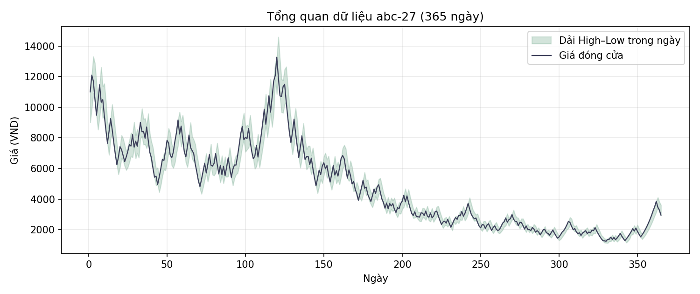
7 mức giá mỗi ngày · 2.555 quan sát
Mỗi nến đại diện cho 5 ngày
VND · Nến 25, ngày 121–125
VND · Nến 67, ngày 331–335
01 / KHÁM PHÁ TRỰC QUAN
Xem biểu đồ gốc trong báo cáo hoặc nạp dữ liệu để khám phá từng nến.
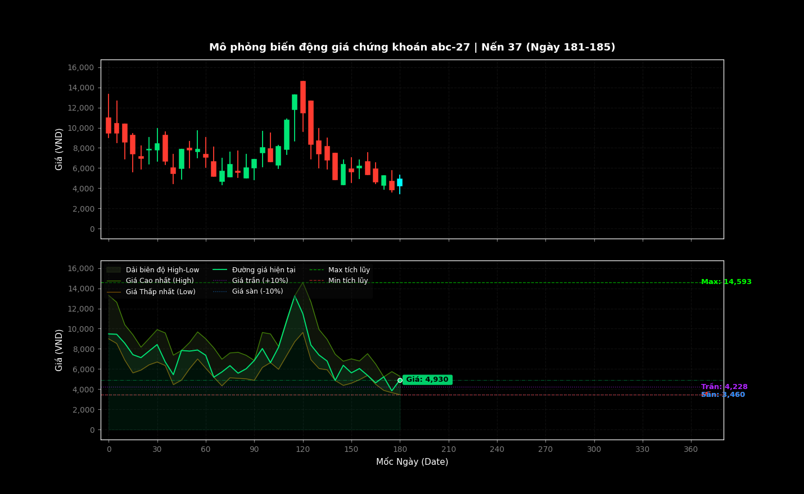
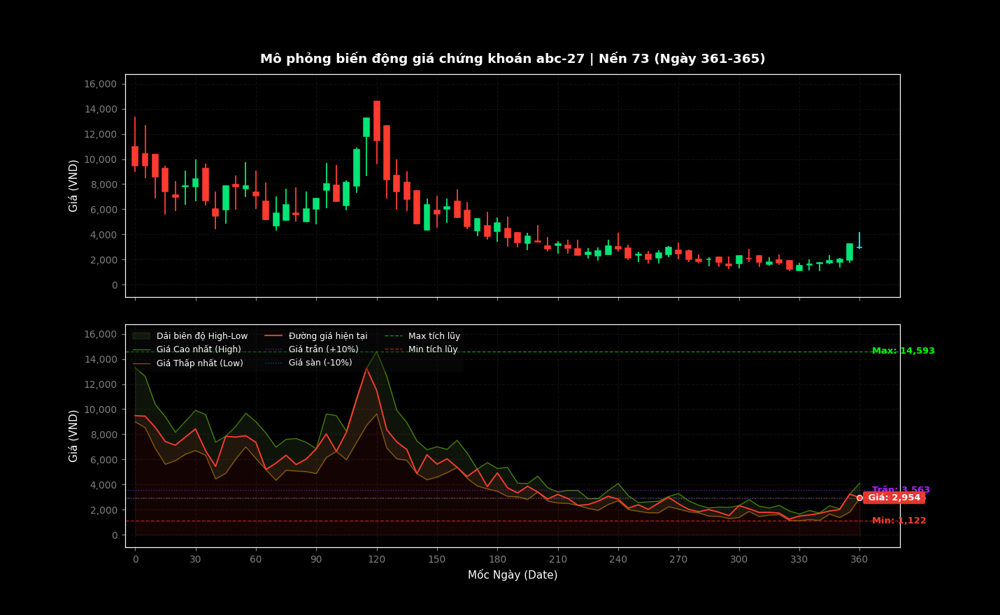
Nạp abc-27.csv gồm 365 dòng × 7 cột, không có tiêu đề. Dữ liệu được xử lý ngay trên trình duyệt.
Chưa nạp CSV · Hai tệp được gửi gồm báo cáo PDF và mã Python.
Màu nến so sánh Close với tham chiếu. Khi phát, nến hiện tại có màu cyan như mã Python.
02 / THỐNG KÊ THEO THÁNG
Biên độ tháng 5 đạt 10.213,10 VND, lớn nhất năm. Giá trung bình cao nhất ở tháng 1, thấp nhất ở tháng 11.
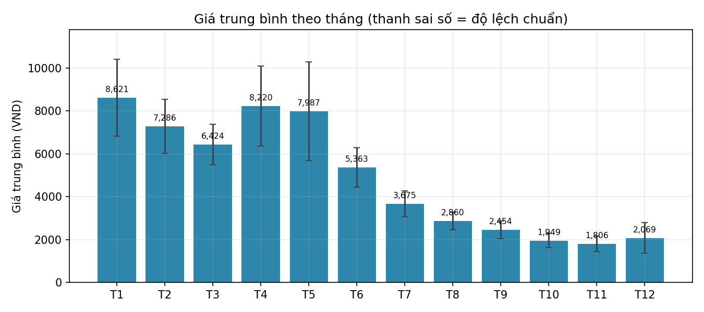
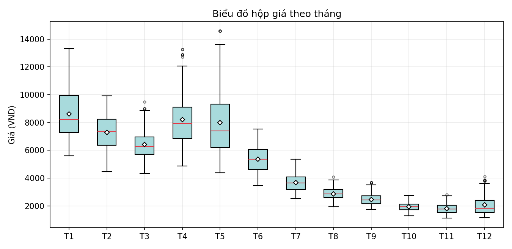
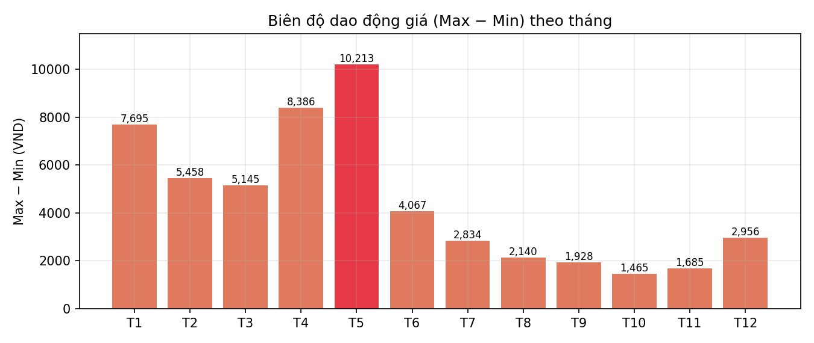
03 / GÓC NHÌN THEO QUÝ
Giá trung bình · VND
−45,2%Giá trung bình · VND
−29,5%Giá trung bình · VND
−33,6%Giá trung bình · VND
+11,1%Phần trăm: thay đổi từ giá mở cửa đầu quý đến giá đóng cửa cuối quý.
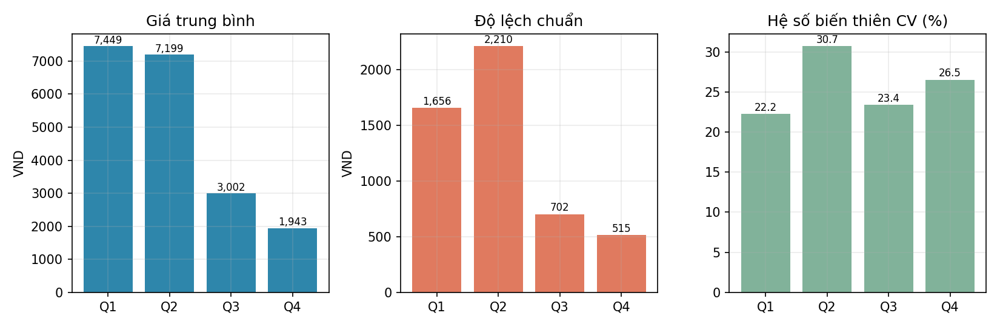
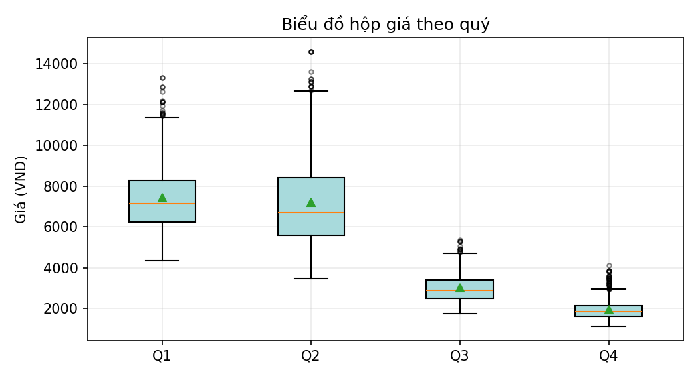
04 / GIAO DỊCH BẤT THƯỜNG
ngày có mức giá chạm trần
ngày có mức giá chạm sàn
ngày mở ở biên này, đóng ở biên kia
Có 299 ngày chạm cả trần và sàn. Giá đóng cửa chạm trần ở 112 ngày và chạm sàn ở 111 ngày. Chỉ ngày 105 (15/04 theo lịch giả định) không chạm cả hai biên.
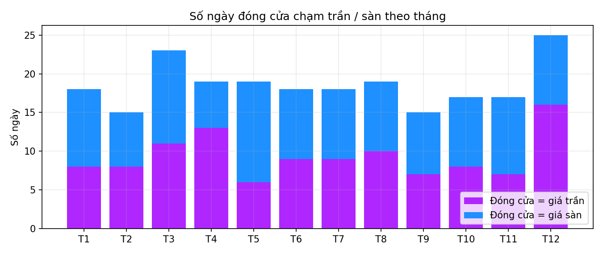
796 quan sát chạm trần; 752 quan sát chạm sàn; không có quan sát bằng tham chiếu. Có 17 ngày cả 7 mức giá đều nằm tại trần hoặc sàn. Chuỗi đóng cửa chạm trần dài nhất: 6 ngày (355–360); chạm sàn dài nhất: 4 ngày (324–327).
Xem bảng ngày đảo chiều và phụ lục trong PDF ↗05 / PHÂN BỐ GIÁ
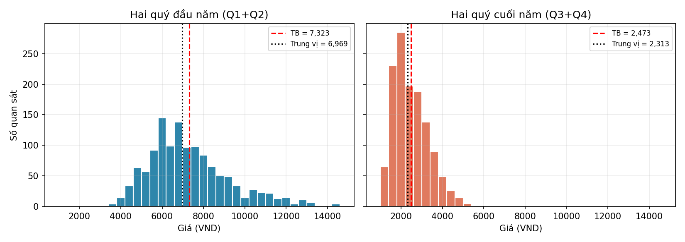
| Chỉ tiêu | Q1 + Q2 | Q3 + Q4 |
|---|---|---|
| Số quan sát | 1.267 | 1.288 |
| Trung bình (VND) | 7.323 | 2.473 |
| Trung vị (VND) | 6.969 | 2.313 |
| Độ lệch chuẩn (VND) | 1.958 | 812 |
Nửa cuối năm tập trung ở vùng giá thấp hơn và phân tán ít hơn về mặt tuyệt đối. Các chỉ số được tính trên toàn bộ 7 mức giá mỗi ngày.
06 / XU HƯỚNG & CÁCH ĐỌC
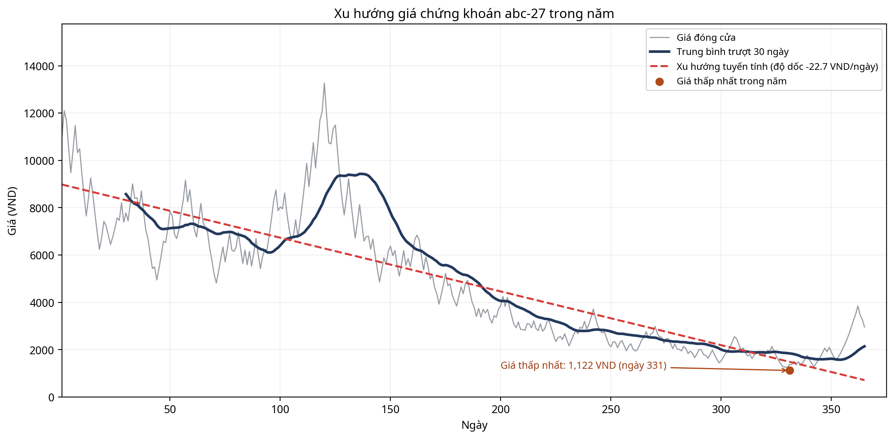
Màu xanh thể hiện giá đóng cửa hiện tại cao hơn giá tham chiếu của nến. Độ dốc của một đoạn đường biểu diễn thay đổi giữa hai điểm. Trong mã Python, toàn bộ đường Close được tô cùng màu theo nến hiện tại, nên một đoạn đi xuống vẫn có thể hiển thị màu xanh.
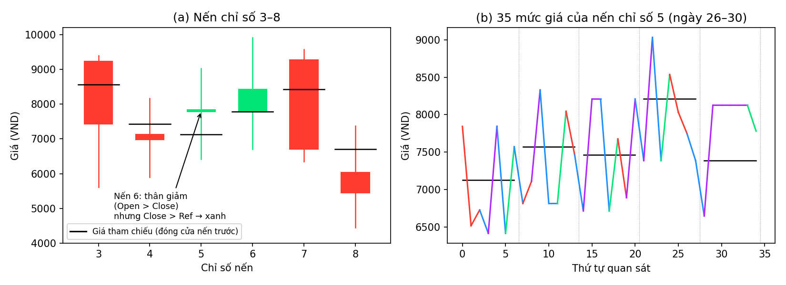
07 / PHƯƠNG PHÁP
365 dòng được ánh xạ thành một năm không nhuận từ 01/01. Đây là quy ước phân tích, không phải lịch giao dịch thực tế.
Open: mở cửa ngày đầu; Close: đóng cửa ngày cuối; High/Low: lớn nhất/nhỏ nhất trong toàn bộ 35 giá.
Mô phỏng lấy Open = 11.000 VND cho nến đầu. Thống kê ngày đầu dùng tham chiếu giả định 10.000 VND; sàn 90%, trần 110%.
pandas xử lý dữ liệu, NumPy tính toán, Matplotlib tạo biểu đồ và FuncAnimation. FFMpegWriter xuất video 120 giây.
08 / TÀI LIỆU DỰ ÁN
Báo cáo đầy đủ, bảng chi tiết và mã mô phỏng gốc.
Để xuất video từ Python, đặt abc-27.csv cùng thư mục với main4.py và cài FFmpeg. Có thể xem mô phỏng trên web tại mục Tương tác sau khi nạp CSV.
CẢM ƠN BẠN ĐÃ GHÉ THĂM
Cảm ơn thầy cô và các bạn đã dành thời gian khám phá dự án.
Những góp ý của mọi người sẽ giúp chúng em hoàn thiện hơn.